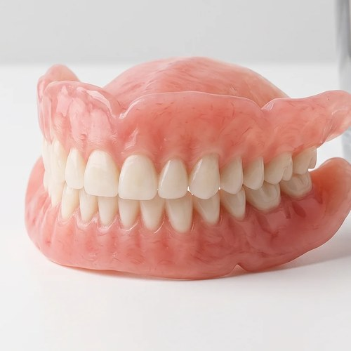
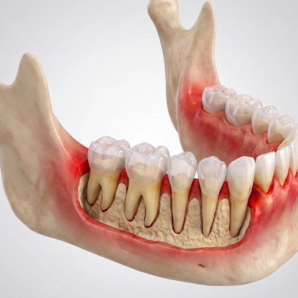
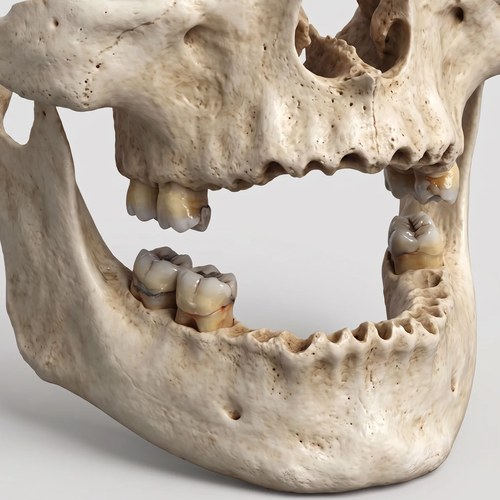

Dinți ficși în 4 zile — preț fix, totul inclus.
Fixat în contract. Fără costuri ascunse.


Dr. Vadim Lazari
5.000+ implanturi · 1.000+ reabilitări totale
Mesajul pornește automat. Îl poți opri oricând de aici sau din colțul din stânga jos.
Preț fix
2.900 € / arcadă
Posibil și în rate.
Totul inclus în preț:
- Consultație + plan
- Extracții + os
- Implanturi + anestezie
- Dinți ficși în 4 zile
Proteză mobilă sau dinți ficși pe implant? Vezi diferența în 20 de secunde

Proteză mobilă
Se mișcă, o scoți seara

Dinți ficși
Stau pe loc, ca ai tăi
Pentru cine sunt recomandați dinții ficși?

Pacienților care poartă proteze mobile și doresc confortul dinților ficși.

Celor care au dinți parodontotici (care se mișcă) ce nu mai pot fi salvați.

Persoanelor care au pierdut majoritatea dinților și doresc o reabilitare completă.
Pacienților care își doresc o estetică impecabilă și funcționalitate 100%.
În 4 zile
Garanție 10 ani la reabilitarea totală
Ce spun pacienții noștri
„Credeam că nu se mai poate, mi-au spus asta la trei clinici. La CIC, în patru zile aveam dinți ficși. Nu-mi vine să cred că am așteptat atât.”


„Purtam proteză de ani de zile și mă săturasem s-o scot în fiecare seară. Acum am dinți ficși, mănânc orice și nu mă mai gândesc la asta.”
„Mi-a plăcut cel mai mult că am știut prețul de la început. N-a apărut nicio surpriză, exact cum mi-au spus la telefon.”
Cazuri reale, explicate de Dr. Lazari
Dr. Lazari povestește pe scurt cazuri reale rezolvate la clinică.
O pacientă refuzată la alte clinici
Caz complex, cu implanturi zigomatice și pterigoidiene — refuzată în alte clinici din cauza costului ridicat. La CIC, prețul a rămas cel fix, 2.900 € / arcadă, indiferent de câte implanturi au fost necesare.
Domnul Ion — 2 implanturi refăcute gratuit
La aproximativ 2 ani după tratament, 2 implanturi au necesitat reintervenție. Le-am refăcut din nou, gratuit — pacientul nu a plătit nimic în plus.
Doamna Natalia — dinți definitivi într-un an, plătiți în rate
Reabilitare totală, sus și jos. A primit dinți provizorii imediat, iar pe cei definitivi în aproximativ un an — plătind treptat, în rate adaptate la venitul ei.
Ce vei afla în cadrul consultației telefonice?
Cum va decurge prima vizită
- 1 Primirea în clinică Recepție caldă, primire rapidă
- 2 Radiografie 3D (CT) Realizată în câteva minute, fără durere
- 3 Consult complet cu medicul Analizăm totul și îți explicăm clar ce se poate face
- 4 Plan de tratament + preț fix Pleci acasă cu un plan clar și un preț fix, fără costuri ascunse
Află ce se poate în cazul tău.
Lasă datele — te sunăm azi.
Întrebări frecvente
Ce discutăm la telefon?
Vorbim despre situația dumneavoastră, ce se poate face în cazul dumneavoastră, cum decurge tratamentul în 4 zile și care e prețul exact. Fără nicio obligație.
Prețul se schimbă pe parcurs?
Nu. La CIC prețul e fix de la început — 2.900 € pe arcadă — și rămâne același, oricât de complicat e cazul. Nu apar costuri în plus pe parcurs.
Ce fel de cazuri rezolvați?
Rezolvăm și cazurile complicate: chiar dacă nu aveți os, chiar dacă vi s-a spus „nu se mai poate” sau ați fost refuzat la altă clinică. Reabilitarea totală e singurul lucru pe care îl facem, în fiecare zi.
De ce să aleg CIC?
Pentru că suntem specializați exclusiv în reabilitări totale pe implanturi — nu facem de toate. Peste 1.000 de cazuri rezolvate, dinți ficși în 4 zile, preț fix și garanție 10 ani.
Se poate plăti în rate?
Da, este posibil și în rate. La telefon vă explicăm exact cum funcționează.